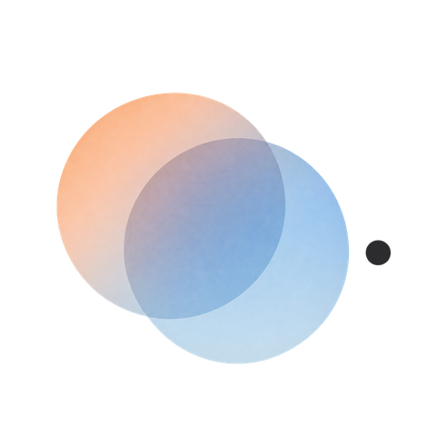

SEC.
Your trips are
hiding in your photos.
We turn the time and place in your photos into one travel story — found automatically, and analyzed entirely on your device.
What it does
01
Automatic Detection
We scan your photo library and group photos that are close in time and place into one trip.
02
Travel Path
See the route you traveled and the places you stayed, mapped out day by day.
03
Travel Sky
Look back on every trip you've taken, laid out together like a constellation.
04
Share Your Story
Turn a trip into a poster card and share it right away.
Privacy by design
Everything happens on your device. Your photos are never uploaded to SEC. servers, and no account is required. Coordinates are sent to a map service only to look up place names. See the Privacy Policy for details.